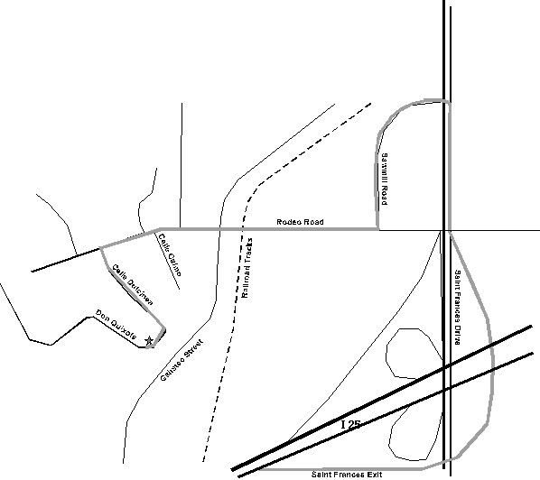

2835 Don Quixote, Santa Fe, NM 87505.
Coming from the South: Take St. Francis exit off Interstate 25 and turn west (left) onto Sawmill Rd. which leads to Rodeo Rd. (after the Conoco Quik Stop).
Coming from the North: Take St. Francis through Santa Fe toward Interstate 25. Turn right onto Sawmill Rd. which leads to Rodeo Rd. (after the Conoco Quik Stop).
Within about 2 blocks you will pass over some railroad tracks. Then you will be aware that you are going down a slight hill. Within a block or two you are aware you are going up a slight hill. After you are going up hill, the first street on your left is Calle Dulcinea. Turn left on to Calle Dulcinea. After two short blocks it curves around to your right and becomes Don Quixote. If you count the house on the curve on the right as house #1, mine is the 3rd on the right (two story house, front patio wall, number is on the patio wall) (2835 Don Quixote).
If you get lost, my home phone is 473-1174.
